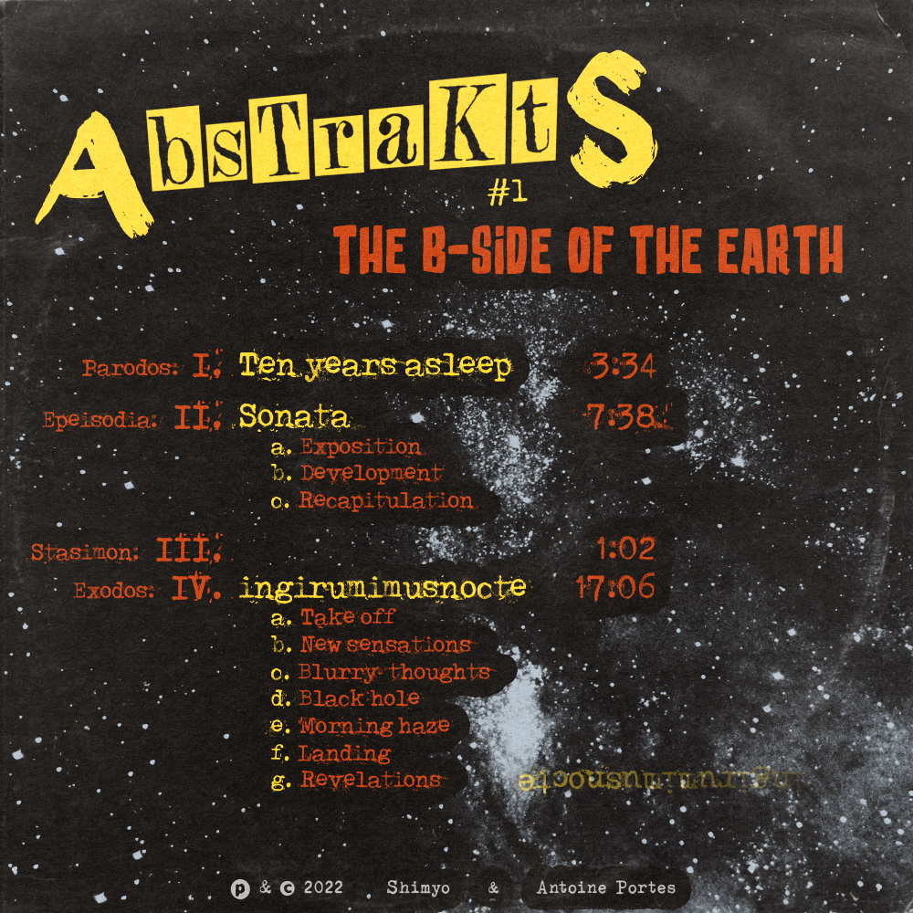
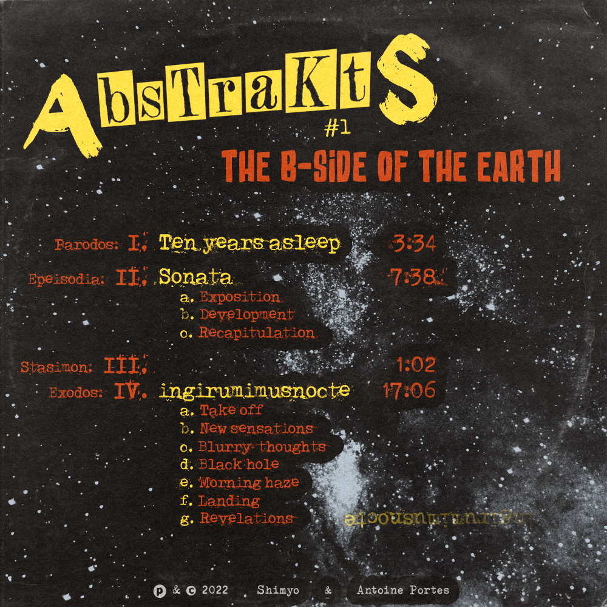

The B-side of the Earth
 

This record was produced throughout 2021 and released in early 2022. Its concept, composition, interpretation, recording, mixing, mastering and artwork were all and exclusively achieved by Shimyo and Antoine Portes — which allows us to proudly declare it 100% D.I.Y.!
The HD (96kHz-24bit) digital full version is available for 5€ at Bandcamp.com.
But you can also listen to it on the following capitalist streaming platforms:
Spotify
Deezer
Youtube Music
Apple Music
Amazon Music
Qobuz
Anghami
This project started as a simple idea: Shimyo approached Antoine Portes and asked him "hey, if I provide you with an instrumental Hip Hop track, do you think that, instead of words, you could enrich it with more instrumental parts?".
From there on, they began working on what would soon become Ten years asleep (track 1). At this time, it was music for pleasure, the word "album" was never spoken.
Once completed, this piece of music was described as "oscillating from not completely sad to almost joyful but mostly remaining right in the middle". Strangely enough, they seemed satisfied with this judgment.
"This was fun! Let's do it again.", they exclaimed in unison. But of course, doing the same thing twice is the very definition of boring.
So Antoine built a guitar and customised his bass, Shimyo removed some of the dust on his Soviet multitrack recorder; and they destructured the second Hip Hop track to turn it into a peacecul dreamy ambient intermezzo. Afterwise, Antoine noticed that the final result almost fitted the sonata form (it only lacked a modulation between themes A & B) — "close enough", they thought; hence the very sober title: Sonata (track 2).
"This was promising! Let's dig deeper."
This time the concept came before the experimentation and the fact that there would be an album had become quite obvious.
– How about a very progressive piece in form of a palindrome starting with a powerful riff and going back to it after evolving through all schoenbergian transformations of the initial melody across several different parts (including a Hip Hop-like one reminiscent of what we did before and a central and symetrical tribal drone from outer space)?
– Mmh I don't know...
– I mean, something like Atom Heart Mother.
– Ah! ok then.
And thus began the never-ending work on ingirumimusnocte (track 4 — or 3 on the abridged version).
NERD ALERT! what comes next is technical and boring, keep reading at your own risk.
This whole seventeen-minute long piece is derived from a four-note leitmotiv:
and its three permutations (retrograde, inversion & retrograde-inversion); and has indeed the form of a palindrome: the conclusion is a variation of the introduction, the last theme is a variation of the first one, the penultimate theme is a variation of the second one and the central theme is symmetrical (meaning that the bars of the first half are reordered backwards in the second half, also the two central bars are literally reversable) — the transitions however remain relatively unrelated to one another.
The title ingirumimusnocte comes from the anonymous latin hexameter "In girum imus nocte ecce et consumimur ingni": it's the first half of its shortened form "In girum imus nocte et consumimur igni". Both forms are palindromes, and the short one happens to be the title that Guy Debord gave to his autobiography.
Such a reference seemed especially suited for an album so much tainted by Situationism: the movie quotes, the title, the artwork and the overall don't-give-a-damn attitude all fit what Debord called "Détournement" (hijack) and prescribed as the adequate form of Revolution in societies were historical development has reached the spectacular phase. Ideology is obviously a dangerous poison, but the ennemy of my ennemy might be of good advice...
This music is instrumental, which means free of any nationalism, imune to walls, fences and borders: it is for everyone. This music is no mean to any lucrative or personal end: its one purpose is to provide pleasure. This music is not commercial and does not ever want to be: it's a cynical cry of revolt from a kind of Art that refuses to be reduced to a commodity.